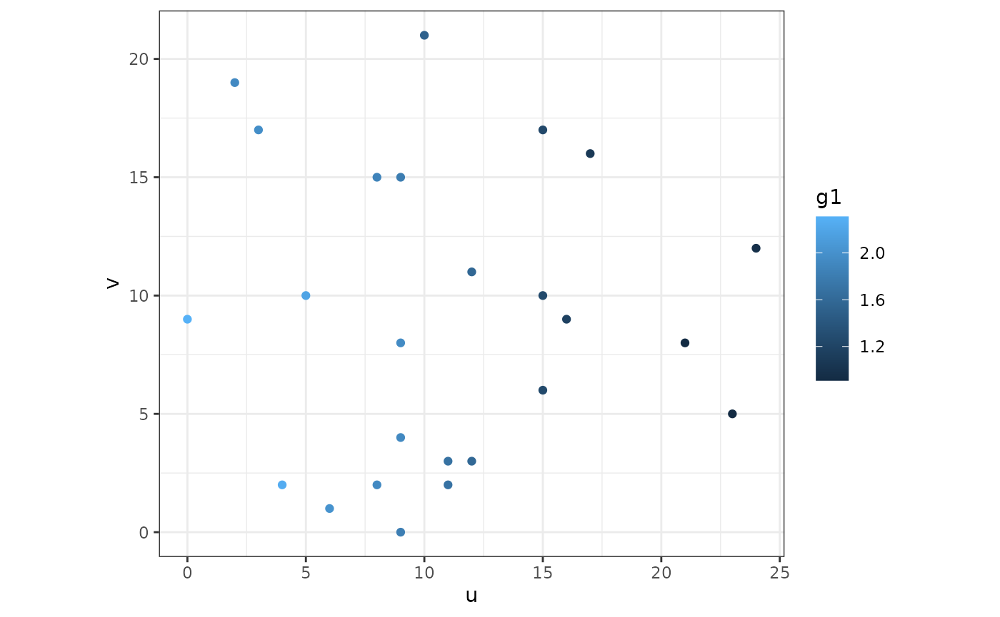
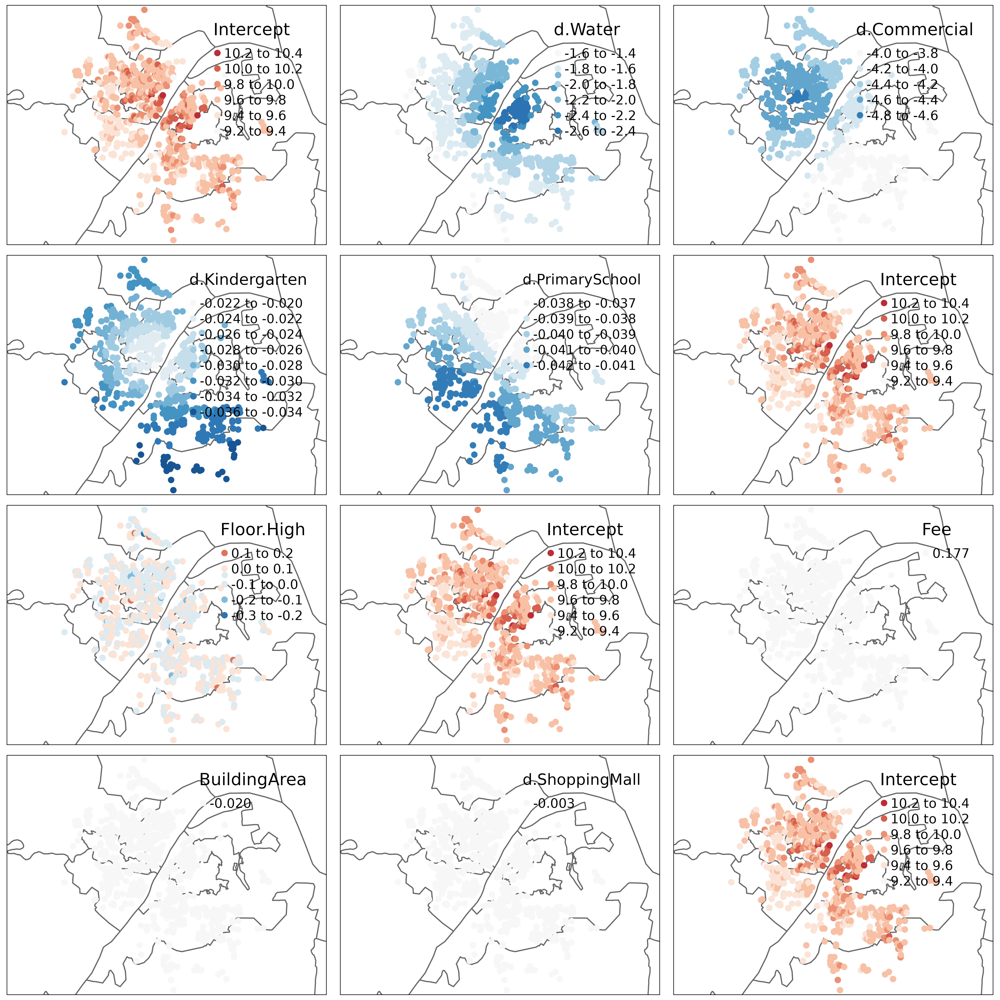
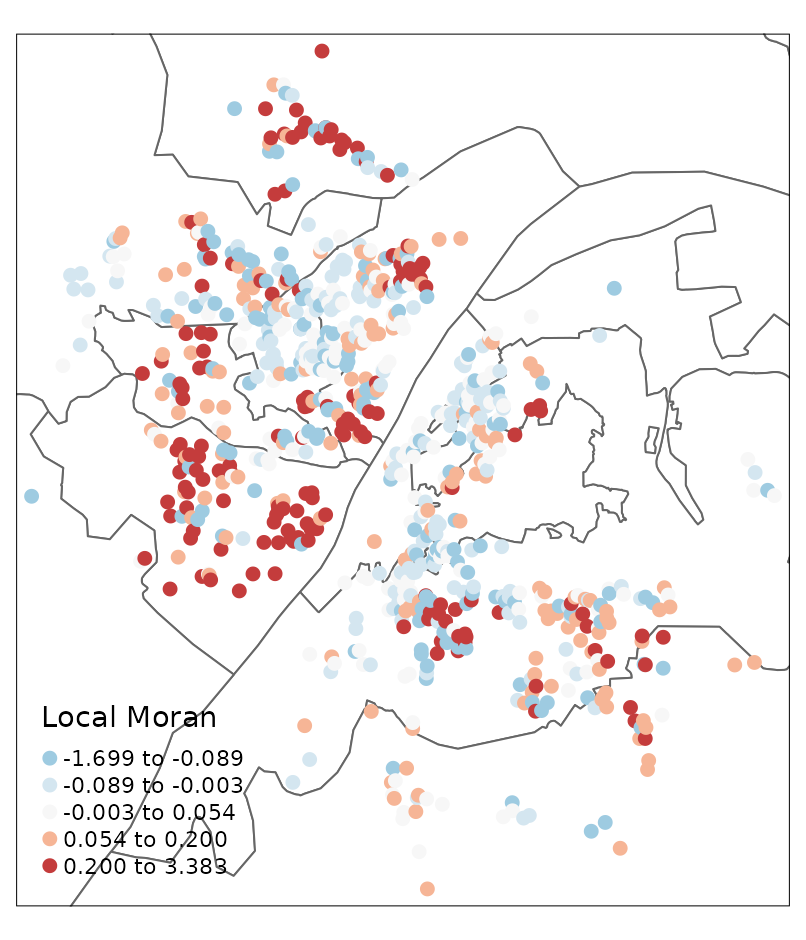
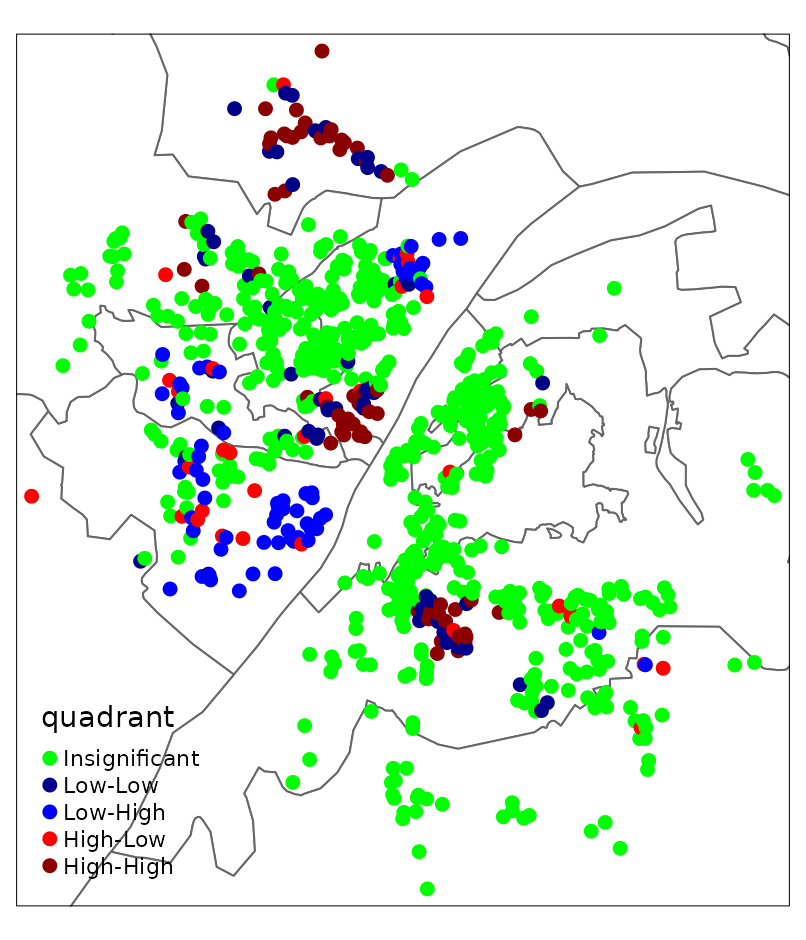

Introduction to HGWR Model
What is HGWR model?
Hierarchical and Geographically Weighted Regression, shorted for HGWR, is a spatial modelling method designed for data of spatial hierarchical structures. Just as its name implies, this is a combination of Hierarchical Linear Model [HLM, also known as Multilevel Model, @Raudenbush-1993] and Geographically Weighted Regression [GWR, @BrunsdonFotheringham-1996]. In this model, spatial effects are divided into three types: global fixed, local fixed and random. Formally, it is expressed as with the dependent variable, the group level independent variables, the local fixed effects, also the group level independent variables, the global fixed effects, the individual level independent variables, the random effects, the individual errors.
Why HGWR model?
As we know, hierarchical structure is commonly existing in spatial data. For example, cities can be grouped by provinces or other higher-level administrative district they belong to; house prices may share some factors from the block; and students in one school have different access to education resources with those in another school. When dealing with this type of data, we usually choose HLM to address the within-group homogeneity and the between-group heterogeneity. And there are usually two types of variables: group-level variables and sample-level variables. The formal ones are used to describe the properties of groups (such as the provinces, blocks and schools); the latter ones are observations of individual samples (such as the cities, houses and students). The effect of some sample-level variables are similar in all groups, thus they are modelled with fixed coefficients (effects). For others, they are modelled individually, i.e., with random effects.
However, for group-level variables, they can only be modelled with fixed effects. For spatial data, we would encounter some problems. According to the Tobler’s first law of Geography “Everything is related to everything else, but near things are more related than distant things” [@Tobler-1970]. If the model is calibrated with equally weighted samples, spatial heterogeneity would be overlooked [@FotheringhamBrunsdon-2002]. Thus, it requires us to distinguish “local fixed effects” from “global fixed effects” to discover spatial heterogeneity in group-level variables.
But why not GWR or Multiscale GWR [@FotheringhamYang-2017, LuBrunsdon-2017] Because when dealing with data of hierarchical structures, GWR is problematic [@HuLu-2022]. We know that GWR calibrate a model with unique coefficients on each sample by borrowing data from its neighbours. And it uses a parameter “bandwidth” to control how many neighbours are included. If samples are not hierarchically structured, everything works well. However, just imagine a situation like Figure 1. For the two samples of red color and blue color, we take the same number of their neighbours, but actually the spatial extents are not the same. In extreme cases, spatial extends of some samples could be too small to hold more than one or two location, but some are large enough. This would lead to the failure of bandwidth optimization and reduce the reliability of the optimized bandwidth.
To solve the problems mentioned above, we need to use HGWR model. It is able to modelling spatial hierarchical structure and spatial heterogeneity simultaneously. Examples below can show that it works well for spatial hierarchical data.
Modelling with HGWR Model
The R package hgwrr is built for calibrating HGWR model. In this section, we are going to show how to use it.
Installation
Package hgwrr is available on CRAN. Simply type the following codes to install it.
install.packages("hgwrr")Or download latest released source package and run the following command to install this package.
Note that RTools is required on Windows.
Usage
We are going to show the usage of hgwrr package with a simulated data.
First, we need to load this package in an R session.
library(hgwrr)
#> Loading required package: sf
#> Linking to GEOS 3.10.2, GDAL 3.4.1, PROJ 8.2.1; sf_use_s2() is TRUE
#> Loading required package: MASSThen we can calibrate an HGWR model via hgwr()
function.
hgwr(
formula, data, coords, bw,
alpha = 0.01, eps_iter = 1e-06, eps_gradient = 1e-06, max_iters = 1e+06,
max_retries = 10, ml_type = HGWR_ML_TYPE_D_ONLY, verbose = 0
)The first five arguments are mandatory.
-
formulaaccepts a formula object in R. Its format follows lme4 package. As there are two types of effects: fixed effects and random effects, we use the following format to specify both of them:dependent ~ L(local.fixed) + fixed + (random | group) dataaccepts adata.frameor asfobject in R. All variables specified informulaare extracted fromdata.(Only needed when
datais of typedata.frame)coordsaccepts a matrix of 2 columns. Each row is the longitude and latitude of each group.bwaccepts a integer or numeric number to specify the bandwidth used in geographically weighted process. Currently it can only be adaptive bandwidth.
Other arguments are optional which is used to control the backfitting
maximum likelihood algorithm. On most occasions the default values are
fine. If the default values cause some problems and you want change some
of them, please check the documentation of function hgwr()
for more information.
Example: A Small Simulated Data Set
This example is used to show the usage of this package and to test whether it works. We don’t care about how good the fitness of this model is with this data set.
A data set “multisampling” is provided with this package,
data(multisampling)
head(multisampling$data)
#> y g1 g2 z1 x1 group
#> 1 1.2311965 0.1706889 -0.2246718 1.4808437 0.7930132 1
#> 2 2.7154442 0.1706889 -0.2246718 0.4890035 0.5222513 1
#> 3 1.9980754 0.1706889 -0.2246718 -0.2261288 1.7462222 1
#> 4 3.7671728 0.1706889 -0.2246718 0.3268472 -1.2713361 1
#> 5 4.4938533 0.1706889 -0.2246718 1.8754945 2.1973895 1
#> 6 0.7256683 0.1706889 -0.2246718 -0.3023764 0.4331308 1
head(multisampling$coords)
#> U V
#> 1 2940.897 2851.943
#> 2 3002.659 3157.717
#> 3 2848.345 2904.326
#> 4 2863.735 2907.999
#> 5 3117.849 2800.236
#> 6 2906.585 2972.770where y is the dependent variable, g1 and
g2 are two group-level variables, z1 and
x1 are two sample-level variables, group are
the labels of the groups they belong to, and U,
V are longitude and latitude coordinate values of all
groups.
We regards g1 and g2 have local fixed
effects, x1 have global fixed effects and z1
have random effects. Then we can calibrate an HGWR model with like
this
ms_hgwr <- hgwr(
formula = y ~ L(g1 + g2) + x1 + (z1 | group),
data = multisampling$data,
coords = multisampling$coords,
bw = 10
)
ms_hgwr
#> Hierarchical and geographically weighted regression model
#> =========================================================
#> Formula: y ~ L(g1 + g2) + x1 + (z1 | group)
#> Method: Back-fitting and Maximum likelihood
#> Data: multisampling$data
#>
#> Fixed Effects
#> -------------
#> Intercept x1
#> 2.844509 0.966059
#>
#> Group-level Spatially Weighted Effects
#> --------------------------------------
#> Bandwidth: 10 (nearest neighbours)
#>
#> Coefficient estimates:
#> Coefficient Min 1st Quartile Median 3rd Quartile Max
#> Intercept -1.430985 -1.350693 -1.140097 -0.911629 -0.727237
#> g1 5.969397 6.328338 7.136143 7.447083 8.481628
#> g2 -0.683021 0.043467 0.887209 1.174541 1.521918
#>
#> Sample-level Random Effects
#> ---------------------------
#> Groups Name Std.Dev. Corr
#> group Intercept 1.921255
#> z1 1.921255 0.000000
#> Residual 1.921255
#> Groups Name Std.Dev. Corr
#> group Intercept 1.921255
#> z1 1.921255 0.000000
#> Residual 1.921255
#>
#> Other Information
#> -----------------
#> Number of Obs: 484
#> Groups: group , 16The output of the model shows estimations of global fixed effects, summary of those of local fixed effects. Also there are the standard deviations of random effects and correlation coefficients between them.
Then we can have a look on the coefficient estimations.
coef(ms_hgwr)
#> Intercept g1 g2 x1 z1
#> 1 0.63728385 7.718650 0.04654332 0.9660594 -0.19316953
#> 2 3.16626457 6.554636 1.33431862 0.9660594 0.28646830
#> 3 0.59681282 7.420539 0.79849908 0.9660594 1.27063639
#> 4 2.26041067 7.395640 0.86517318 0.9660594 -0.59984180
#> 5 5.72855111 8.481628 -0.68302067 0.9660594 -1.46606958
#> 6 0.35901307 6.235741 1.26283083 0.9660594 0.69526966
#> 7 2.39877444 7.650960 -0.02458224 0.9660594 -1.46161629
#> 8 2.96706662 7.274534 -0.09758977 0.9660594 0.32008996
#> 9 0.80004263 5.969397 0.95359748 0.9660594 0.60679673
#> 10 1.03852566 6.004158 1.52191830 0.9660594 -0.85534304
#> 11 0.88341276 6.997752 1.08577440 0.9660594 0.31273932
#> 12 0.19476251 7.473628 0.04039086 0.9660594 -0.41973900
#> 13 0.08539817 7.308281 0.90924576 0.9660594 1.57629379
#> 14 2.91084212 5.975806 1.10442026 0.9660594 0.01154764
#> 15 1.58219548 6.420936 1.24466256 0.9660594 0.04762966
#> 16 2.05821271 6.734675 0.26179176 0.9660594 -0.04494147With ggplot2 or other packages, we can create some figures.
library(ggplot2)
ms_hgwr_coef <- as.data.frame(cbind(multisampling$coords, coef(ms_hgwr)))
ggplot(ms_hgwr_coef, aes(x = U, y = V)) +
geom_point(aes(color = g1)) +
coord_fixed() + theme_bw()
We can also convert it to spatial data and use tmap to visualize.
library(sf)
library(tmap)
#> Breaking News: tmap 3.x is retiring. Please test v4, e.g. with
#> remotes::install_github('r-tmap/tmap')
ms_hgwr_coef_sf <- st_as_sf(ms_hgwr_coef,
coords = names(multisampling$coords),
crs = 27700)
tm_shape(ms_hgwr_coef_sf) + tm_dots(col = c("g1", "g2"), size = 0.5)
#> Variable(s) "g2" contains positive and negative values, so midpoint is set to 0. Set midpoint = NA to show the full spectrum of the color palette.And we can also fetch the fitted and residuals.
head(data.frame(
real = multisampling$data$y,
fitted = fitted(ms_hgwr),
residuals = residuals(ms_hgwr)
))
#> real fitted residuals
#> 1 1.2311965 2.4243588 -1.1931623
#> 2 2.7154442 2.3543800 0.3610642
#> 3 1.9980754 3.6749504 -1.6768750
#> 4 3.7671728 0.6529918 3.1141810
#> 5 4.4938533 3.7048352 0.7890181
#> 6 0.7256683 2.4211548 -1.6954865The summary() function will give some statistical
information about this model.
summary(ms_hgwr)
#> Hierarchical and geographically weighted regression model
#> =========================================================
#> Formula: y ~ L(g1 + g2) + x1 + (z1 | group)
#> Method: Back-fitting and Maximum likelihood
#> Data: multisampling$data
#>
#> Parameter Estimates
#> -------------------
#> Fixed effects:
#> Estimated Sd. Err t.val Pr(>|t|)
#> Intercept 2.844509 0.254491 11.177234 0.000000 ***
#> x1 0.966059 0.046763 20.658467 0.000000 ***
#>
#> Bandwidth: 10 (nearest neighbours)
#>
#> GLSW effects:
#> Mean Est. Mean Sd. *** ** * .
#> Intercept -1.115285 0.543705 0.0% 0.0% 56.2% 18.8%
#> g1 6.976060 3.128518 0.0% 6.2% 68.8% 25.0%
#> g2 0.663998 3.158385 0.0% 0.0% 0.0% 0.0%
#>
#> SLR effects:
#> Groups Name Mean Std.Dev. Corr
#> group Intercept 0.000000 1.921255
#> z1 0.005422 1.921255 0.000000
#> Residual 0.233641 1.921255
#>
#>
#> Diagnostics
#> -----------
#> rsquared 0.641698
#> logLik NaN
#> AIC NaN
#>
#> Scaled Residuals
#> ----------------
#> Min 1Q Median 3Q Max
#> -5.222809 -0.982000 0.161400 1.480594 5.562956
#>
#> Other Information
#> -----------------
#> Number of Obs: 484
#> Groups: group , 16On the current stage, only pseudo is available. In the future, more diagnostic information will be provided in this package.
Example: Large Scale Simulated Data
In the former example, there are only 484 observations and 16 groups.
They are not adequate enough to get precises estimations. Here, we are
going to use a large scale simulated data set to show the performance of
HGWR model. As the true value of coefficients are already known (stored
in variable msl_beta), closeness between estimated and true
values is an practical performance metric.
The data set is provided here. Its
structure is similar to data multisampling.
data(multisampling.large)
head(multisampling.large$data)
#> y g1 g2 x1 z1 group
#> 1 2.090256 0.1933745 -0.057836 0.7930132 1.1432041 1
#> 2 3.456452 0.1933745 -0.057836 0.5222513 1.0198745 1
#> 3 2.876627 0.1933745 -0.057836 1.7462222 -0.7071740 1
#> 4 4.510162 0.1933745 -0.057836 -1.2713361 0.8431381 1
#> 5 5.583738 0.1933745 -0.057836 2.1973895 -0.1603318 1
#> 6 1.601511 0.1933745 -0.057836 0.4331308 -0.7634945 1
head(multisampling.large$coords)
#> V1 V2
#> [1,] 2940.897 2851.943
#> [2,] 3002.659 3157.717
#> [3,] 2848.345 2904.326
#> [4,] 2863.735 2907.999
#> [5,] 3117.849 2800.236
#> [6,] 2906.585 2972.770
msl_beta <- multisampling.large$beta
head(msl_beta)
#> Intercept g1 g2 z1 x1
#> 1 0.7114818 11.309720 3.336208 -0.13592452 1
#> 2 1.6523106 12.438025 4.972805 -0.04079697 1
#> 3 1.4783712 6.876733 -5.069080 1.01053901 1
#> 4 3.2734732 6.088872 -3.877653 -0.15826244 1
#> 5 3.8245206 21.341706 3.814638 -2.15663750 1
#> 6 0.4886921 1.243364 -2.469626 0.49864683 1In this data, we also regards g1 and g2 as
two group-level variables, z1 and x1 as two
sample-level variables, group as the labels of the groups
they belong to, and U, V as longitude and
latitude coordinate values of all groups. Then we calibrate an HGWR
model.
As the data is large (13862 observations), it may take some time to get results.
msl_hgwr <- hgwr(
formula = y ~ L(g1 + g2) + x1 + (z1 | group),
data = multisampling.large$data,
coords = multisampling.large$coords,
bw = 32, kernel = "bisquared"
)
msl_hgwr
#> Hierarchical and geographically weighted regression model
#> =========================================================
#> Formula: y ~ L(g1 + g2) + x1 + (z1 | group)
#> Method: Back-fitting and Maximum likelihood
#> Data: multisampling.large$data
#>
#> Fixed Effects
#> -------------
#> Intercept x1
#> 1.856041 1.010716
#>
#> Group-level Spatially Weighted Effects
#> --------------------------------------
#> Bandwidth: 32 (nearest neighbours)
#>
#> Coefficient estimates:
#> Coefficient Min 1st Quartile Median 3rd Quartile Max
#> Intercept -0.839777 -0.231721 -0.065754 0.095718 0.622823
#> g1 -3.110748 0.390257 3.637581 6.433589 12.076704
#> g2 -10.971950 -2.457583 -0.439274 1.977123 8.306397
#>
#> Sample-level Random Effects
#> ---------------------------
#> Groups Name Std.Dev. Corr
#> group Intercept 1.989349
#> z1 1.989349 0.000000
#> Residual 1.989349
#> Groups Name Std.Dev. Corr
#> group Intercept 1.989349
#> z1 1.989349 0.000000
#> Residual 1.989349
#>
#> Other Information
#> -----------------
#> Number of Obs: 13862
#> Groups: group , 200Fitness Assessment
Then we check the estimations of intercept, g1,
g2 and z1 via some scatter plots.
library(dplyr)
#>
#> Attaching package: 'dplyr'
#> The following object is masked from 'package:MASS':
#>
#> select
#> The following objects are masked from 'package:stats':
#>
#> filter, lag
#> The following objects are masked from 'package:base':
#>
#> intersect, setdiff, setequal, union
library(purrr)
coef(msl_hgwr) %>%
select(Intercept, g1, g2, z1) %>%
list(label = names(.), Truth = msl_beta[names(.)], Estimated = .) %>%
pmap_df(data.frame) %>%
mutate(label = factor(label, levels = c("Intercept", "g1", "g2", "z1"))) %>%
ggplot(aes(x = Truth, y = Estimated)) + geom_point() +
coord_fixed() + scale_y_continuous(limits = c(-25, 25)) +
facet_grid(cols = vars(label)) +
theme_bw()In addition to these scatter plots, root mean squared errors (RMSE) and mean absolute errors of estimations and true values are also very useful to assess the fitting performance.
msl_hgwr_err <- coef(msl_hgwr) %>%
select(Intercept, g1, g2, z1, x1) %>% {
as.data.frame(rbind(
MAE = map2_dbl(msl_beta, ., ~ mean(abs(.x - .y))),
RMSE = map2_dbl(msl_beta, ., ~ sqrt(mean((.x - .y)^2)))
))
}
msl_hgwr_err
#> Intercept g1 g2 z1 x1
#> MAE 0.3599828 2.367257 2.266689 0.2025208 0.01071645
#> RMSE 0.4910691 3.644679 2.976845 0.2576828 0.01071645Comparison of HGWR, GWR and HLM
As a comparison, we can also calibrate a GWR model and HLM model and have a look at their fitting performance. The GWR model can be calibrated with the following codes.
enable_parallel = Sys.info()['sysname'] != 'Darwin'
parallel_method = ifelse(enable_parallel, "omp", FALSE)
parallel_arg = ifelse(enable_parallel, 0, NA)
### GWR model
library(GWmodel)
#> Loading required package: robustbase
#> Loading required package: sp
#> Loading required package: Rcpp
#> Welcome to GWmodel version 2.4-2.
msl_gwr_data <- multisampling.large$data
coordinates(msl_gwr_data) <- with(multisampling.large, coords[data$group, ])
##### Get optimized bandwidth via golden minimization algorithm.
msl_gwr_bw <- 265 # The bandiwdth is pre-optimised to save time.
##### Calibrate GWR model with optimized bandwidth.
msl_gwr <- gwr.basic(
formula = y ~ g1 + g2 + x1 + z1,
data = msl_gwr_data,
bw = msl_gwr_bw,
adaptive = TRUE,
parallel.method = parallel_method,
parallel.arg = parallel_arg
)
#### Get coefficient estimations.
#### As samples in one group have equal estimations,
#### we use mean value of each group to represent them.
msl_gwr_coef <- cbind(msl_gwr$SDF@data, group = msl_gwr_data$group) %>%
select(Intercept, g1, g2, x1, z1, group) %>%
group_by(group) %>%
summarise_all(mean)
##### Calculate RMSE and MAE of estimations.
msl_gwr_err <- msl_gwr_coef %>%
select(Intercept, g1, g2, z1, x1) %>% {
as.data.frame(rbind(
MAE = map2_dbl(msl_beta, ., ~ mean(abs(.x - .y))),
RMSE = map2_dbl(msl_beta, ., ~ sqrt(mean((.x - .y)^2)))
))
}
msl_gwr_err
#> Intercept g1 g2 z1 x1
#> MAE 3.414899e+15 8.396317e+16 1.925287e+17 0.7135892 0.4244955
#> RMSE 4.168939e+16 1.006233e+18 2.338391e+18 2.7673018 2.6585412And also a HLM model calibrated with the following codes.
library(lme4)
#> Loading required package: Matrix
msl_hlm <- lmer(
formula = y ~ g1 + g2 + x1 + (z1 | group),
data = multisampling.large$data
)
msl_hlm_coef <- coef(msl_hlm)$group
colnames(msl_hlm_coef)[which(colnames(msl_hlm_coef) == "(Intercept)")] <- "Intercept"
msl_hlm_err <- msl_hlm_coef %>%
select(Intercept, g1, g2, z1, x1) %>% {
as.data.frame(rbind(
MAE = map2_dbl(msl_beta, ., ~ mean(abs(.x - .y))),
RMSE = map2_dbl(msl_beta, ., ~ sqrt(mean((.x - .y)^2)))
))
}
msl_hlm_err
#> Intercept g1 g2 z1 x1
#> MAE 0.5403015 3.961721 3.183228 0.2036397 0.0102346
#> RMSE 0.8043435 5.423963 4.610203 0.2584218 0.0102346A bar plot will be helpful here to compare the fitness of these three models.
list(HGWR = msl_hgwr_err, GWR = msl_gwr_err, HLM = msl_hlm_err) %>%
map2_dfr(., names(.), function(x, nx) {
map2_dfr(x, colnames(x), function(i, ni) {
data.frame(Coefficient = ni, Label = rownames(x), Value = i)
}) %>% cbind(Algorithm = nx, .)
}) %>%
ggplot(aes(x = Coefficient, y = Value, group = Algorithm, fill = Algorithm)) +
geom_col(position = "dodge") +
geom_text(aes(label = round(Value, 2), y = pmin(Value, 10), vjust = -0.2),
position = position_dodge(0.9)) +
facet_grid(rows = vars(Label)) +
scale_y_continuous(limits = c(0, 10), oob = scales::squish,
expand = expansion(add = c(0.5, 1))) +
theme_bw()Note that in this figure we limited the scale of y axis to make the bar for
x1andz1more obvious. The actual numbers are labelled above bars.
We can say that HGWR has best fitness among these three models. It is able to give more precise estimations for local fixed effects. And it can estimate global fixed effects and also random effects as precisely as HLM does, but more precisely than GWR does.
Case Study: Impact Factors of House Price in Wuhan
As the fitness of HGWR has been demonstrated with simulation data, we
are thing about applying it in collected data sets. Here we are going to
use a case study to show the usage of HGWR on this type of data. The
data set is provided as wuhan.hp by this package.
This data set, collected in 2018, has 19599 properties located in 19599 communities. In each observation, there are fields of house properties, locational and neighbourhood variables. In details, they are distances to nearby educational resources (kindergartens, primary schools, middle schools, high schools, universities), commercial areas (business districts, shopping malls and supermarkets), transportation facilities (metro stations and bus stations), rivers, lakes, and green lands. The following figure shows the distribution of these properties, and the table gives information about all available variables.
| Variables | Value | Level | Type | Logarithm |
|---|---|---|---|---|
| Price | House price per square metre. | Sample | Dependent | Yes |
| Floor.High | 1 if a property is on a high floor, otherwise 0. | Sample | Structural | |
| Floor.Low | 1 if a property is on a low floor, otherwise 0. | Sample | Structural | |
| Decoration.Fine | 1 if a property is well decorated, otherwise 0. | Sample | Structural | |
| PlateTower | 1 if a property is of the plate-tower type, otherwise 0. | Sample | Structural | |
| Steel | 1 if a property is of ‘steel’ structure, otherwise 0. | Sample | Structural | |
| BuildingArea | Building area in square metres. | Sample | Structural | Yes |
| Fee | Management fee per square meter per month. | Group | Neighbourhood | Yes |
| d.Commercial | Distance to the nearest commercial area. | Group | Locational | Yes |
| d.Greenland | Distance to the nearest green land. | Group | Locational | Yes |
| d.Water | Distance to the nearest river or lake. | Group | Locational | Yes |
| d.University | Distance to the nearest university. | Group | Locational | Yes |
| d.HighSchool | Distance to the nearest high school. | Group | Locational | Yes |
| d.MiddleSchool | Distance to the nearest middle school. | Group | Locational | Yes |
| d.PrimarySchool | Distance to the nearest primary school. | Group | Locational | Yes |
| d.Kindergarten | Distance to the nearest kindergarten. | Group | Locational | Yes |
| d.SubwayStation | Distance to the nearest subway station. | Group | Locational | Yes |
| d.Supermarket | Distance to the nearest supermarket. | Group | Locational | Yes |
| d.ShoppingMall | Distance to the nearest shopping mall. | Group | Locational | Yes |
A variable selection process [@HuLu-2022] suggests us to use the following variables to build a HGWR model:
- Fee
- d.Water
- d.Commercial
- d.PrimarySchool
- d.Kindergarten
- BuildingArea
- Floor.High
But we are going to append a variable d.ShoppingMall which is usually concerned by customers and researchers. And regards the locational and Fee as local fixed effects, the BuildingArea as global fixed effects and Floor.High as random effects. Then we can calibrate a HGWR model with the following codes.
whhp_hgwr <- hgwr(
formula = Price ~ L(d.Water + d.Commercial + d.Kindergarten + d.PrimarySchool) +
Fee + BuildingArea + d.ShoppingMall + (Floor.High | group),
data = wuhan.hp,
bw = "CV"
)
whhp_hgwr
#> Hierarchical and geographically weighted regression model
#> =========================================================
#> Formula:
#> Price ~ L(d.Water + d.Commercial + d.Kindergarten + d.PrimarySchool) +
#> Fee + BuildingArea + d.ShoppingMall + (Floor.High | group)
#> Method: Back-fitting and Maximum likelihood
#> Data: wuhan.hp
#>
#> Fixed Effects
#> -------------
#> Intercept Fee BuildingArea d.ShoppingMall
#> 9.905824 0.176803 -0.020361 -0.002869
#>
#> Group-level Spatially Weighted Effects
#> --------------------------------------
#> Bandwidth: 562 (nearest neighbours)
#>
#> Coefficient estimates:
#> Coefficient Min 1st Quartile Median 3rd Quartile Max
#> Intercept -0.255465 -0.217436 -0.196229 -0.160231 -0.136330
#> d.Water -2.455754 -2.132142 -1.918264 -1.767405 -1.485196
#> d.Commercial -4.637517 -4.456327 -4.275131 -3.973180 -3.840621
#> d.Kindergarten -0.035458 -0.031036 -0.027930 -0.025192 -0.021800
#> d.PrimarySchool -0.041803 -0.040628 -0.039498 -0.038174 -0.037094
#>
#> Sample-level Random Effects
#> ---------------------------
#> Groups Name Std.Dev. Corr
#> group Intercept 0.151359
#> Floor.High 0.079724 -0.022868
#> Residual 0.081436
#> Groups Name Std.Dev. Corr
#> group Intercept 0.151359
#> Floor.High 0.079724 -0.022868
#> Residual 0.081436
#>
#> Other Information
#> -----------------
#> Number of Obs: 19599
#> Groups: group , 776Coefficient Visualization
We can also make some maps to visualize the estimated coefficients. Boundary data of Wuhan is provided. It is in GeoJSON format and can be loaded by package rgdal. For coefficients, we can simply combine it with coordinates of houses. Because coefficients, coordinates and groups can be one-to-one matched.
wuhan <- sf::read_sf("https://raw.githubusercontent.com/hpdell/hgwr/docs/data/wuhan.geojson")
wuhan_hp_groups <- st_centroid(aggregate(wuhan.hp, by = list(wuhan.hp$group), mean))
wuhp_coef_sf <- cbind(coef(whhp_hgwr), st_coordinates(wuhan_hp_groups)) %>%
st_as_sf(coords = c("X", "Y"), crs = 4547)
wh_basemap <- tm_shape(wuhan) + tm_polygons(col = "white")Then visualize coefficients estimations with the basemap.
with(whhp_hgwr$effects, c(local.fixed, random, global.fixed, "Intercept")) %>%
map(function(var) {
wh_basemap +
tm_shape(wuhp_coef_sf, is.master = T) +
tm_dots(col = var, size = 0.1, midpoint = 0,
palette = "-RdBu", legend.col.reverse = T)
}) %>%
tmap_arrange(ncol = 3)
From this figure, we can see that as BuildingArea is regarded as global fixed effects, for all samples there is only one estimations. As Floor.High is regarded as random effects, each group has a unique estimation but no spatial relationship can be seen. For local fixed effects, their estimations seems to be locally related. This is suggested by the first law of geography. Besides, spatial heterogeneity is also obvious in their estimations.
Residual Analysis
Via the standard function residuals(), we have the
access to residuals estimated by this model. Then we can visualize them
by combining the summary statistics of residuals with coordinates. For
example, here we created a map showing mean residual of each group
together with standard deviation.
whhp_hgwr_res <- data.frame(
residuals = residuals(whhp_hgwr),
group = wuhan.hp$group
) %>%
group_by(group) %>%
summarise(res.abs.mean = mean(abs(residuals)),
res.sd = sd(residuals)) %>%
cbind(st_coordinates(wuhan_hp_groups)) %>%
st_as_sf(coords = c("X", "Y"), crs = 4547)
wh_basemap +
tm_shape(whhp_hgwr_res, is.master = T) +
tm_dots(col = "res.abs.mean", size = "res.sd", midpoint = 0,
palette = "-RdBu", legend.col.reverse = T)And we can also convey a global Moran test on the residuals to to find well estimated points.
library(spdep)
#> Loading required package: spData
#> To access larger datasets in this package, install the spDataLarge
#> package with: `install.packages('spDataLarge',
#> repos='https://nowosad.github.io/drat/', type='source')`
whhp_hgwr_res_listw <- st_coordinates(whhp_hgwr_res) %>%
knearneigh(k = 20) %>% knn2nb() %>% nb2listw() %>% listw2U()
moran.test(whhp_hgwr_res$res.abs.mean, whhp_hgwr_res_listw)
#>
#> Moran I test under randomisation
#>
#> data: whhp_hgwr_res$res.abs.mean
#> weights: whhp_hgwr_res_listw
#>
#> Moran I statistic standard deviate = 6.1948, p-value = 2.918e-10
#> alternative hypothesis: greater
#> sample estimates:
#> Moran I statistic Expectation Variance
#> 0.0639606679 -0.0012903226 0.0001109483From the p-value and Moran’s I value, we can find that although it is suggested to reject the null hypothesis, the global spatial autocorrelation is too weak to take any effects. Additionally, a local Moran test is also useful.
whhp_hgwr_res_localmoran <- localmoran(whhp_hgwr_res$res.abs.mean, whhp_hgwr_res_listw)
wh_basemap +
tm_shape(cbind(whhp_hgwr_res, whhp_hgwr_res_localmoran), is.master = T) +
tm_dots(col = "Ii", size = 0.2, palette = "-RdBu", style = "quantile",
midpoint = 0, title = "Local Moran")
whhp_hgwr_res$res_c <- scale(whhp_hgwr_res$res.abs.mean, scale = F)
whhp_hgwr_res$lmoran_c <- scale(whhp_hgwr_res_localmoran[,1], scale = F)
whhp_hgwr_res$quadrant <- with(whhp_hgwr_res, {
quadrant <- integer(length(res_c))
quadrant[res_c < 0 & lmoran_c < 0] <- 1
quadrant[res_c < 0 & lmoran_c > 0] <- 2
quadrant[res_c > 0 & lmoran_c < 0] <- 3
quadrant[res_c > 0 & lmoran_c > 0] <- 4
quadrant[whhp_hgwr_res_localmoran[,5] > 0.1] <- 0
as.factor(quadrant)
})
LISA_palette <- list(
"Insignificant" = "green", "Low-Low" = "darkblue", "Low-High" = "blue",
"High-Low" = "red", "High-High" = "darkred"
)
tm_layout(aes.palette = "cat") +
wh_basemap +
tm_shape(whhp_hgwr_res, is.master = T) +
tm_dots(col = "quadrant", size = 0.2,
palette = as.vector(unlist(LISA_palette)),
labels = names(LISA_palette))
It can be seen that most residuals are not spatially clustered. Most of those showing spatial clusters locate near the boundary of this study area.